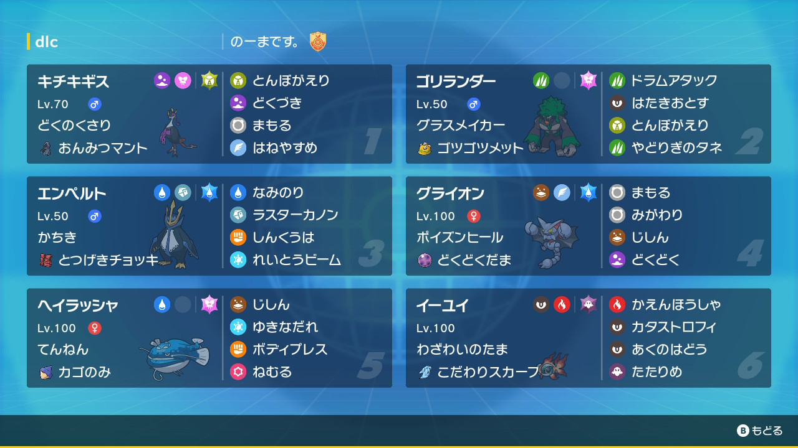

動画
パーティ画像

努力値
キチキギス @ おんみつマント
どくのくさり / しんちょう
195(252)-111-124(172)-72-159-130(84)
ゴリランダー @ ゴツゴツメット
グラスメイカー / わんぱく
207(252)-146(4)-156(252)-72-90-105
エンペルト @ とつげきチョッキ
かちき / ひかえめ
191(252)-81-108-179(252)-121-81(4)
グライオン @ どくどくだま
ポイズンヒール / わんぱく
179(228)-116(4)-162(20)-51-127(252)-116(4)
ヘイラッシャ @ カゴのみ
てんねん / わんぱく
257(252)-121(4)-183(252)-76-85-55
イーユイ @ こだわりスカーフ
わざわいのたま / おくびょう
130-78-100-187(252)-141(4)-167(252)
どくのくさり / しんちょう
195(252)-111-124(172)-72-159-130(84)
ゴリランダー @ ゴツゴツメット
グラスメイカー / わんぱく
207(252)-146(4)-156(252)-72-90-105
エンペルト @ とつげきチョッキ
かちき / ひかえめ
191(252)-81-108-179(252)-121-81(4)
グライオン @ どくどくだま
ポイズンヒール / わんぱく
179(228)-116(4)-162(20)-51-127(252)-116(4)
ヘイラッシャ @ カゴのみ
てんねん / わんぱく
257(252)-121(4)-183(252)-76-85-55
イーユイ @ こだわりスカーフ
わざわいのたま / おくびょう
130-78-100-187(252)-141(4)-167(252)